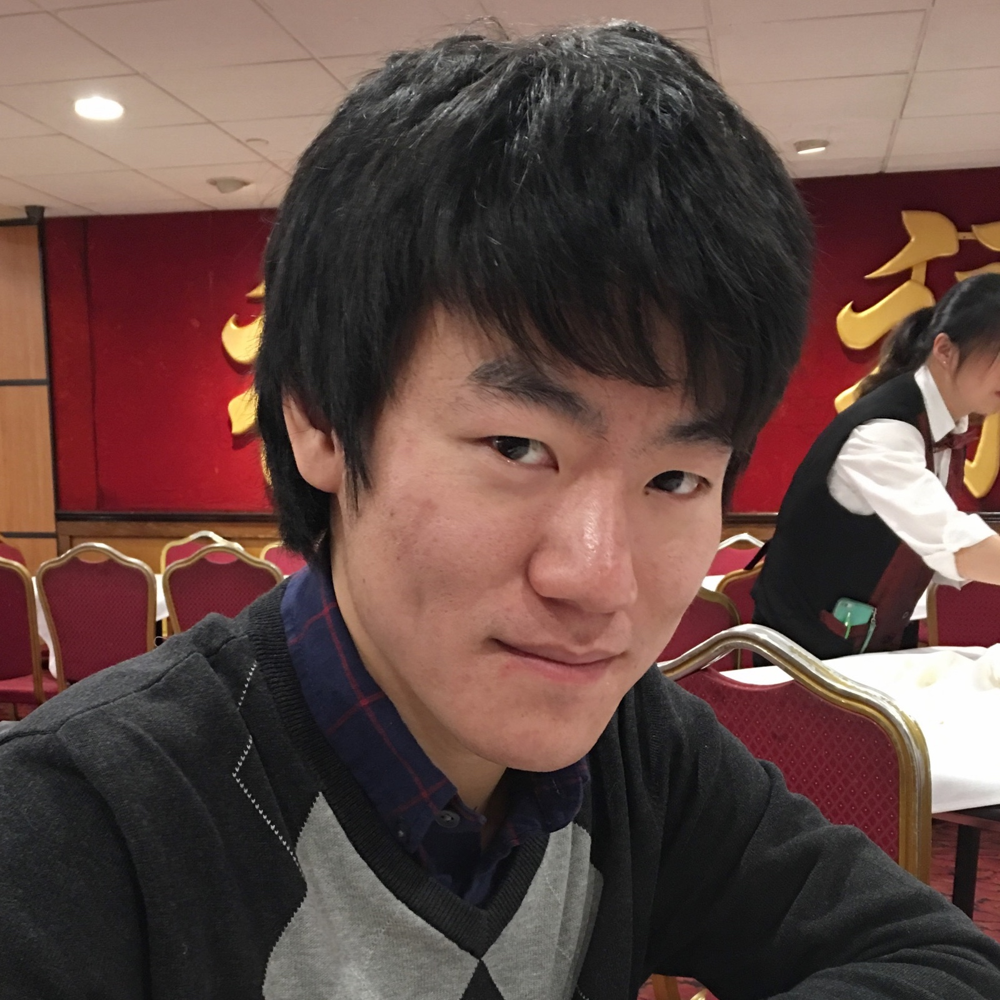

Example
Which book we recommend
One advantage of our method is that it can be applied to a single book instead of users. Please click each book here to see which other books are closely related to it according to our algorithm.
Source
Where our work can be found
-

GitHub Repository
The GitHub repository of this project is where all IPython files for main codes and expository notes are stored.
-
Screencast
Our video can be found here.
Our Amazing Team
Who we are

Dongkwan Kim
sylvaner@mit.edu
Han Kyul Joo
hkjoo@mit.edu
Tae Yeon Yoo
tyyoo88@gmail.com